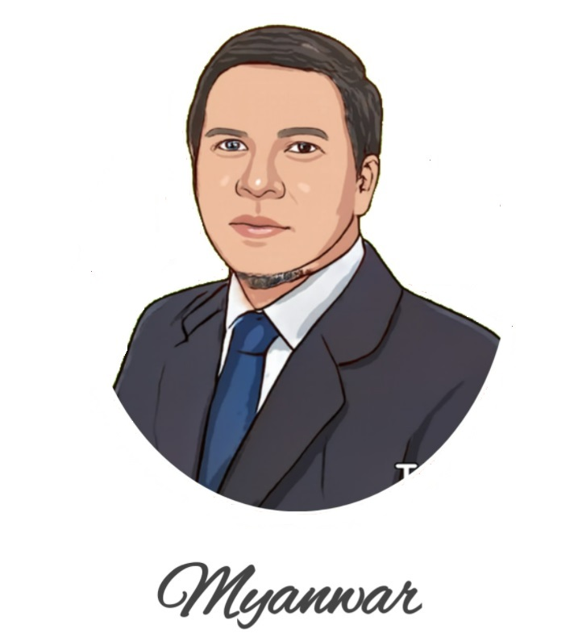

Muhammad Yanwar
IT Professional
Developer-Infrastructure-Security-Project Management
Education
- Budi Luhur University, Computer Science GPA 3.35 2001-2006
Work Experience
- Head IT Operation BP Tapera 2024
July - December 2024
- Managing IT Operation BP Tapera
- Design Architecture IT Operation Infrastructure
- Planning and Budgetting For IT Operation Infrastructure
- Monitoring IT Operation Service Level
- Manage and Operation CI/CD Rancher
- Manage and Operation Alibaba Public Cloud
- Manage and Operation Google Cloud Platform
- Manage and Operation Cisco Router and Cisco Switch
- Manage and Operation Virtual Machine (VMWare)
- Manage and Operation IT Service Management
- Manage and Operation On Premise Data Center
- Head IT Security Data Govenance BP Tapera 2024
January 2023 - June 2024
- Managing IT Security BP Tapera
- Design Architecture IT Security
- Managing Budget For IT Security
- Manage IT Security Operation Center (SOC)
- Manage and Operation Incapsula Web Application Firewall
- Manage and Operation Cloudflare Web Application Firewall
- Manage and Operation Fortinet Next Gen Firewall
- Manage and Operation DAST Burpsuite
- Manage and Operation PAM BeyondTrust
- Manage and Operation API Management
- Manage and Operation SAST Sonarqube
- Manage and Operation Trellix Endpoint Security
- Manage and Operation Office 365 Collaboration
- Manage and Operation Google Suite Workspace
- Head IT Security Semen Indonesia Group (SIG)
Januari 2022 - December 2022
- Managing IT Security SIG
- Design Architecture IT Security SIG
- Planning Budgetting IT Security SIG
- Manage and Operation IT Security SIG
- Manage and Operation Huawei Web Application Firewall
- Manage and Operation Huawei Next Gen Firewall
- Manage and Operation Fortinet Firewall
- Manage and Operation PAM BeyondTrust
- Manage and Operation Kapersky Endpoint Security
- Manage and Operation Office 365 Collaboration
- Head IT Security Bank Tabungan Negara (BTN)
June 2015 - July 2020
- Managing IT Security BTN
- Design Architecture IT Security BTN
- Planning Budgetting IT Security BTN
- Manage and Operation IT Security BTN
- Manage and Operation Incapsula Web Application Firewall
- Manage and Operation F5 Web Application Firewall
- Manage and Operation Checkpoint Next Gen Firewall
- Manage and Operation Fortinet Firewall
- Manage and Operation PAM BeyondTrust
- Manage and Operation Trellix Endpoint Security
- Manage and Operation Cisco Iron Port Mail Gateway
Professional Skill/Knowledge
- IT Network (LAN/WAN/SDWAN)
- IT Storage (SAN/NAS)
- IT Virtualization (VM Ware, RHEV)
- IT Devops
- IT Developer (html,javascript,NodeJS)
- IT Database (MSSQL,Postgree,CRDB)
- IT Security (WAF,NGFirewall,EDR,SOAR,DLP)
- IT Risk
- IT Project Management
- IT Policy (Cobit, ITIL)
Certification
- Cisco Certified Interconnect Expert (CCIE)
- Cisco Certified Network Professional (CCNP)
- Risk Management Cerfitied (BSMR 2)
- Checkpoint Cerfitied Security Administrator (CCSA)
- FORESEC FCFE (Forensic Certified Forensic Expert)
- Cerfitied Information Security Professional (CISSP) Completion
- Certified Ethical Hacker (CEH) Completion
- AIX System Network Completion
- Google Compute Engine Completion
- Google Platform Infrastructure Completion
About Me
Contact Me